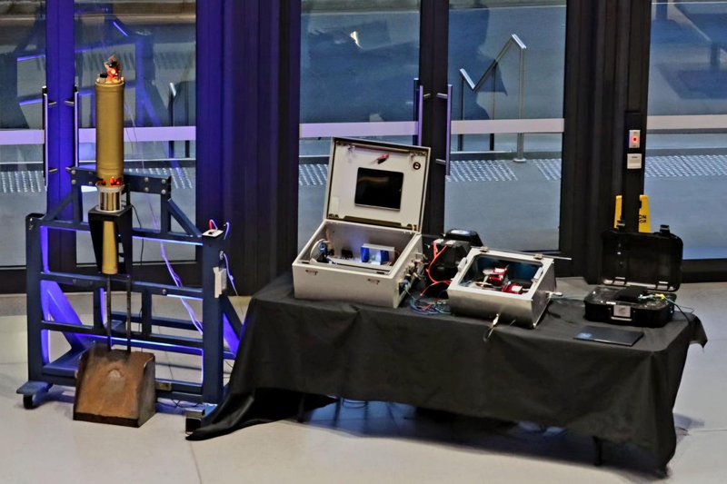
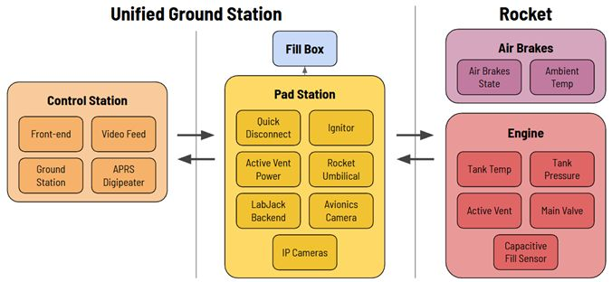
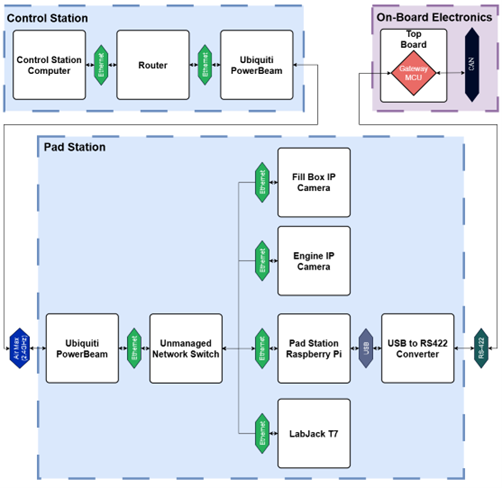
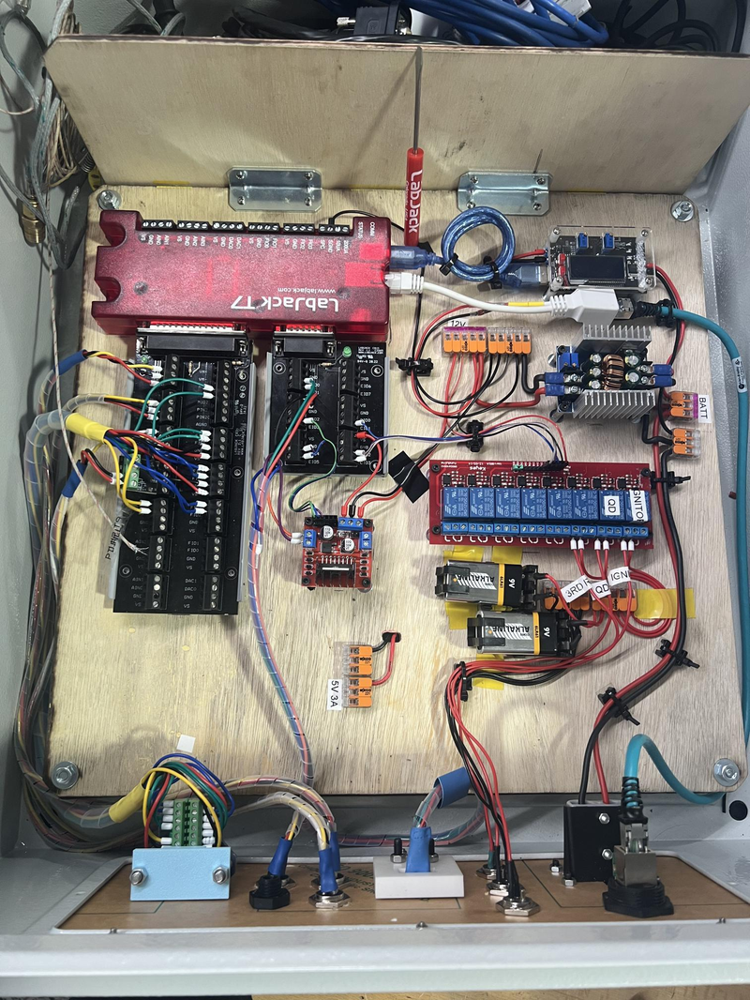
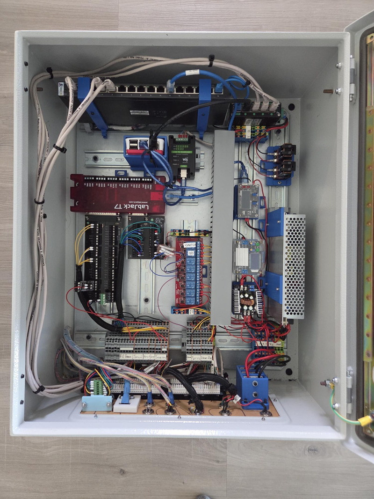
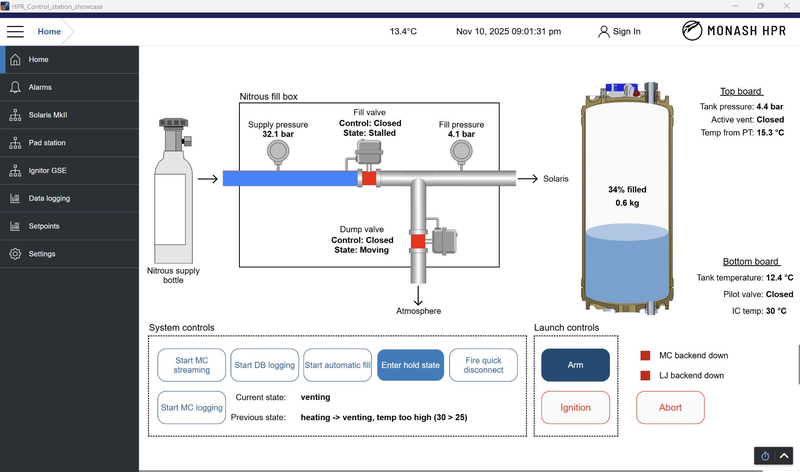
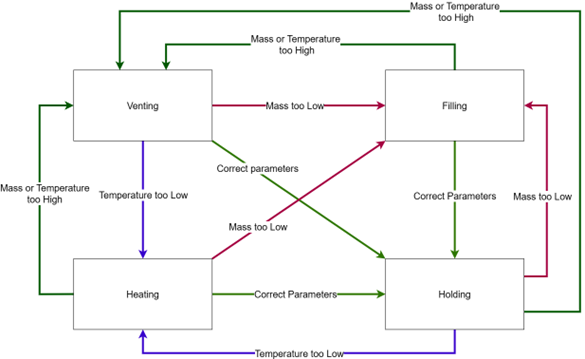

Solaris Mk II & Ground Station Equipment Control Electronics
System Overview
The Solaris Mk II hybrid engine and its ground support equipment (GSE) required control electronics that could fill, ignite, and safe them remotely while logging high-rate telemetry during cold-flow, hot-fire and launch campaigns.



My Work
- Owned the multithreaded Python control backend that routed telemetry and executed automated sequences
- Built and iterated the Pad Station electrical cabinet and field wiring
- Integrated mixed hardware: Raspberry Pi, LabJack T7 DAQ/control, and embedded controllers over RS-422 / CAN / MQTT
- Co-presented control architecture at IREC 2025; supported award-winning submission
Outcome
- Operational system used in test campaigns and IREC 2025 launch
- Monash HPR received the Jim Furfaro Technical Excellence Award
Ground Station Hardware Development
The Pad Station enclosure went through multiple iterations (left to right) to improve reliability, capability, serviceability, and setup time at the pad.



- Built the main GSE electrical cabinet: DIN rails, wire ducting, ferrules, harnessing, and labeled field I/O.
- Central compute: Raspberry Pi 4 controlling sensors/actuators through a LabJack T7 (analog + digital I/O, PWM; up to 100 kHz sampling).
- Networked system (router + switches) with long-range wireless bridge hardware for pad-to-control connectivity.
- Power architecture: ~12 V source with regulated 12 V / 5 V rails; PoE used where possible to reduce cabling complexity.
- Iterated mechanical layout and connectors to speed up field troubleshooting and isolate faults during test days.
Custom Capacitive Propellant Sensor
Challenge: We needed an accurate way to estimate onboard nitrous oxide mass during fill. Load-cell based approaches were not accurate or precise enough to achieve repeatable engine performance.
What I owned
- Led a 4-person effort to design, build, and validate a capacitive fill sensor end-to-end
- Owned sensing element design, STM32 firmware, calibration and integration
Sensor details
- Sensing element is a ~500 mm cylindrical capacitor whose capacitance shifts as liquid N2O replaces gas
- Observed near-linear shift on the order of ~18 pF from empty to full; digitized by a custom board
- Key failure mode was parasitic capacitance; I fixed this by using an actively driven shield on the sensor cable
Result: Enabled repeatable fill-state estimation (repeatability within 10 grams) and became an input to automated fill logic during operations.


Control & Safety
Control stack:
- Pad Station Raspberry Pi ran the control application and hosted an MQTT broker
- Sensor polling + actuation via LabJack T7 (pressure, thermocouples, valve control, relays, motors)
- Dedicated serial link to onboard electronics over RS-422; CAN used on-vehicle
- Control Station running Ignition SCADA UI for visualization and control and also hosting a database for telemetry logging
Automated fill sequence:
- Uses capacitive mass estimate and pressure/temperature to achieve a precise propellant temperature and mass
- Operator initiates; sequence runs autonomously, controlling onboard and offboard actuators
Fail-safe design:
- Keyed isolation for pyro channels while personnel are at the pad
- Valves and venting biased to safe positions on power loss
- Watchdogs on critical links (UI, DAQ, onboard electronics) trigger safing on heartbeat loss

